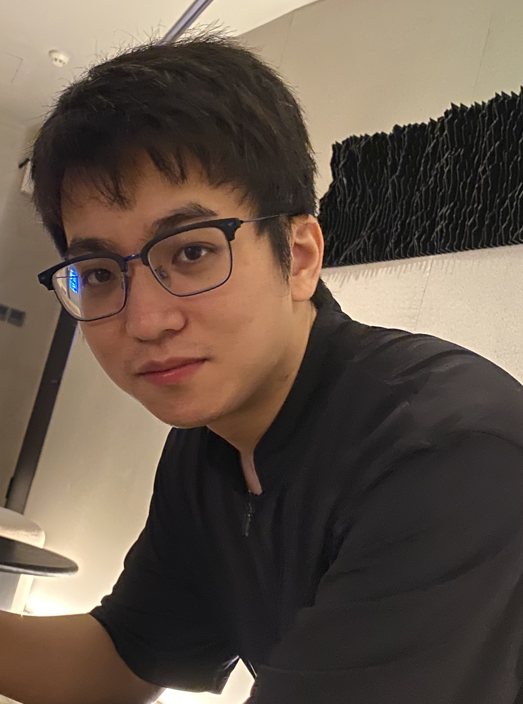
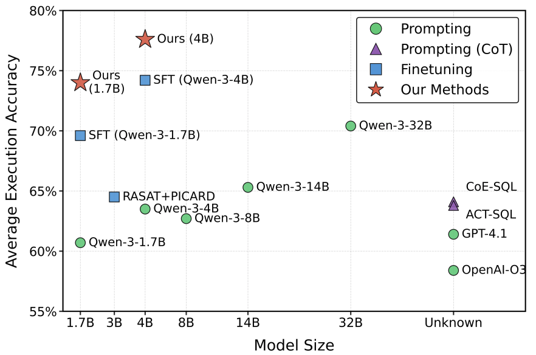
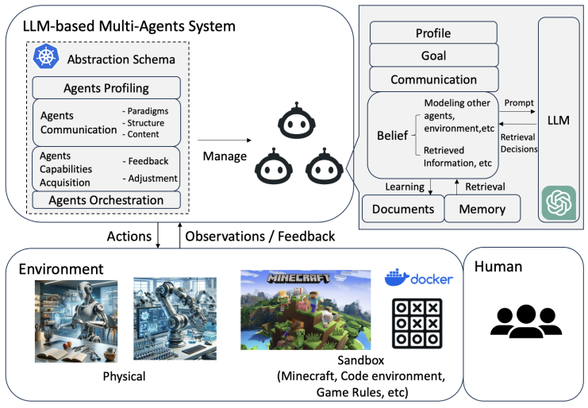
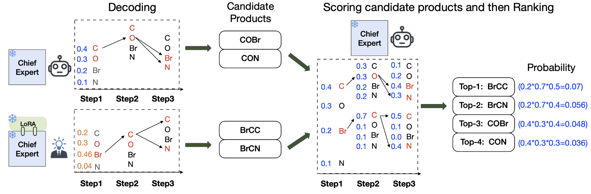
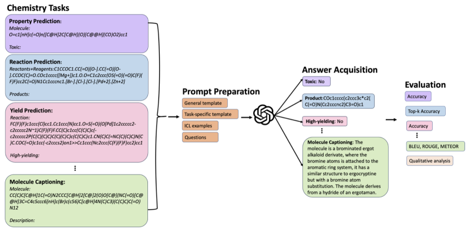
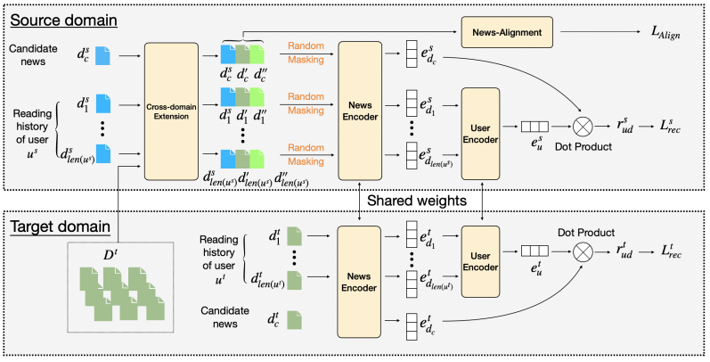
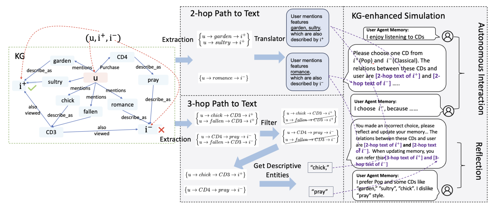
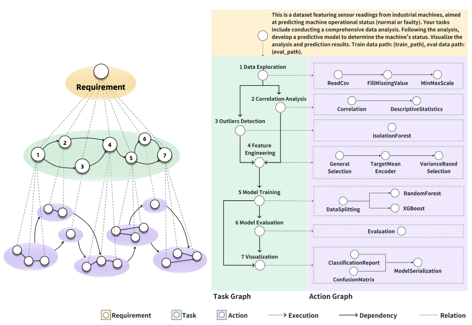

|
Taicheng Guo
PhD Student, Computer Science and Engineering |
 Publication | Competition Award | Experience | CV | MISC |
I'm a final-year PhD Candidate at University of Notre Dame, advised by Prof. Xiangliang Zhang.
I study Agents and Systems, and how they co-evolve on the path to superintelligence, especially Long-Horizon Agent Training, Automated Recursive Self-Improvement/Systems (Code Intelligence, AutoResearch), Agent-System Co-Design, and Language Model Post-Training. I work as a research engineer who is driven to build novel & fundamental systems from scratch. My work (all first-authored) includes:
|
|
-

AutoLLMResearch: Training Research Agents for Automating LLM Experiment Configuration - Learning from Cheap, Optimizing Expensive
Taicheng Guo, Nitesh V. Chawla, Olaf Wiest, Xiangliang Zhang.
In Submission
Problem: Configuring large-scale LLM experiments is costly and expert-dependent; AutoML assumes cheap trials infeasible at LLM scale.[Code]
Contribution: An agentic framework + LLMConfig-Gym (multi-fidelity, 1M+ GPU-hours) casting config search as a long-horizon MDP.
Key Insight: Learn from cheap low-fidelity runs, extrapolate to optimize expensive high-fidelity ones. -

MTSQL-R1: Towards Long-Horizon Multi-Turn Text-to-SQL via Agentic Training
Taicheng Guo, Hai Wang, ChaoChun Liu, Mohsen Golalikhani, Xin Chen, Xiangliang Zhang, Chandan K. Reddy.
In ACL 2026 Main (Acceptance Rate 19%)
Problem: Multi-turn Text-to-SQL is one-shot translation without execution feedback, giving non-executable queries.[Code]
Contribution: Agentic training as an MDP: propose, execute, verify, refine SQL.
Key Insight: Execution-based verification + dialogue memory enable self-correction over one-shot generation. -

Large Language Model based Multi-Agents: A Survey of Progress and Challenges.
Taicheng Guo, Xiuying Chen, Yaqi Wang, Ruidi Chang, Shichao Pei, Nitesh V. Chawla, Olaf Wiest, Xiangliang Zhang.
In IJCAI 2024 (Acceptance Rate 20%)
Problem: LLM-based multi-agent systems lack a unified view of architectures, communication, and limits.[Code]
Contribution: A survey organizing them by agent profiling, communication, capability enhancement, and benchmarks.
Key Insight: LLM planning and reasoning enable multi-agent collaboration beyond single agents. -

ReactionTeam: Teaming Model Experts for Divergent Thinking Beyond Typical Reaction Patterns.
Taicheng Guo, Changsheng Ma, Xiuying Chen, Bozhao Nan, Kehan Guo, Shichao Pei, Nitesh V. Chawla, Olaf Wiest, Xiangliang Zhang.
In IEEE Conference on BigData 2025 Oral (Acceptance Rate 18%)
Problem: Likelihood-maximizing models predict only the top outcome, ignoring reactions' stochastic nature.[Code]
Contribution: An ensemble of pattern-specialized experts plus a ranking expert for diverse predictions.
Key Insight: Emulating chemists' divergent thinking captures plausible rare outcomes single models miss. -

What can Large Language Models do in chemistry? A comprehensive benchmark on eight tasks.
Taicheng Guo, Kehan Guo, Bozhao Nan, Zhenwen Liang, Zhichun Guo, Nitesh V. Chawla, Olaf Wiest, Xiangliang Zhang.
In NeurIPS 2023 (Acceptance Rate 32%)
Problem: LLMs' chemistry capabilities are poorly understood and unevaluated.[Code]
Contribution: A benchmark of eight chemistry tasks across five LLMs (zero-/few-shot).
Key Insight: LLM competence varies sharply by task; in-context learning is decisive. -

Few-shot News Recommendation via Cross-lingual Transfer.
Taicheng Guo, Lu Yu, Basem Shihada, Xiangliang Zhang.
In the ACM Web Conference(WWW 2023 Oral) (Acceptance Rate 19%)
Problem: Early-stage news platforms face cold-start with only a few interaction records.[Code] [Code]
Contribution: A cross-lingual transfer framework from data-rich to few-shot platforms.
Key Insight: News shares topics across languages, so cross-lingual transfer beats data scarcity. -

Knowledge Graph Enhanced Language Agents for Recommendation
Taicheng Guo, Chaochun Liu, Hai Wang, Varun Mannam, Fang Wang, Xin Chen, Xiangliang Zhang, Chandan K. Reddy.
In Submission
Problem: Recommendation language agents miss user–item relationships, giving weak profiles.
Contribution: KGLA verbalizes knowledge-graph paths into the agent's user–item simulation.
Key Insight: KG paths expose the reasons behind user preferences. -

Data Interpreter: An LLM Agent For Data Science.
Sirui Hong, Yizhang Lin, ... Taicheng Guo
In ACL 2025 Findings
Problem: LLM agents struggle with long-horizon, dynamic data-science workflows.[Code]
Contribution: Hierarchical graph task decomposition + programmable, self-refining code nodes.
Key Insight: Subgraph modeling adapts to evolving dependencies while verification boosts reliability.


-
KDD Cup Large-Scale RecSys Competition.
Ranked 2nd place. 🥈 ($1000)
-
NeurIPS Black-Box AutoML Optimization Challenge.
Ranked 2nd place in warm-start friendly leaderboard. 🥈
-
Kaggle Arabic Sentiment Analaysis.
Ranked 5th place.
-
Kaggle Expert
-
IEEE Computer Society Global student challenge.
Ranked 1st place. 🏅 ($1000)
Last update: Apr, 2026. Webpage template borrows from Stephen Bach.